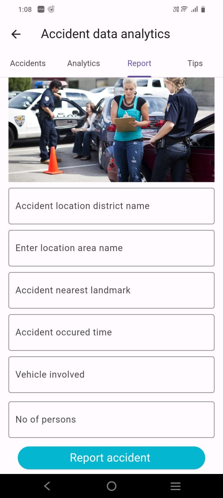
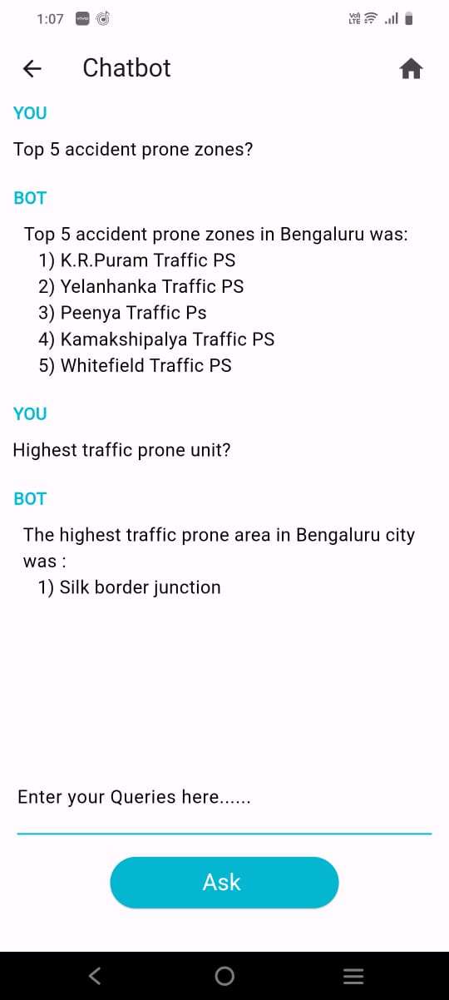

I developed an accident data analytics mobile app using Flutter, aimed at improving road safety through data science
techniques.
This app features a user-friendly interface built with Flutter and Dart, ensuring a seamless and efficient user experience.
By integrating real-time accident data from backend services, users always have access to the latest informations and updates.
The app offers dynamic visualizations and analysis, allowing users to explore accident hotspots,
trends, and patterns over time.
To further enhance its utility, the app employs machine learning algorithms to solve all road accident data related queries in real-time.
This predictive capability empowers users and authorities to take proactive measures to prevent accidents.
By understanding the conditions that contribute to higher accident risks, users can make more informed decisions.
Detailed geospatial analysis helps pinpoint accident-prone areas, facilitating targeted safety interventions and resource allocation.
This project showcases my proficiency in mobile app development using Flutter, as well as my expertise in data science,and AIML.
It provides practical solutions for public users and police forces, supporting informed decision-making and enhanced road safety.
The accident data analytics mobile app is a testament to my ability to create impactful applications that address real-world challenges.